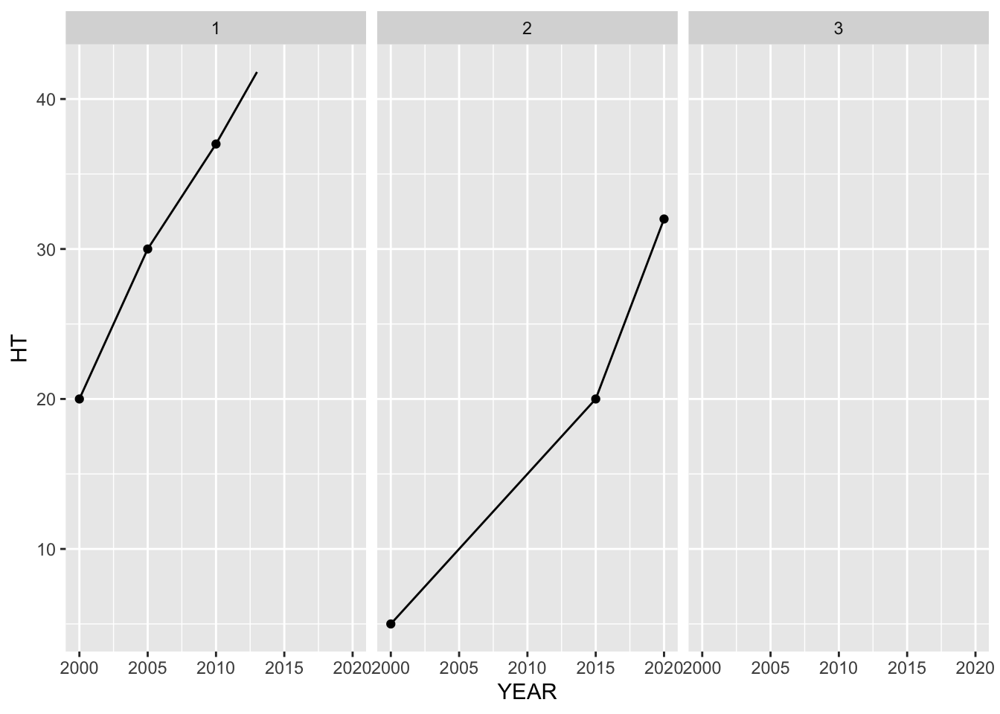
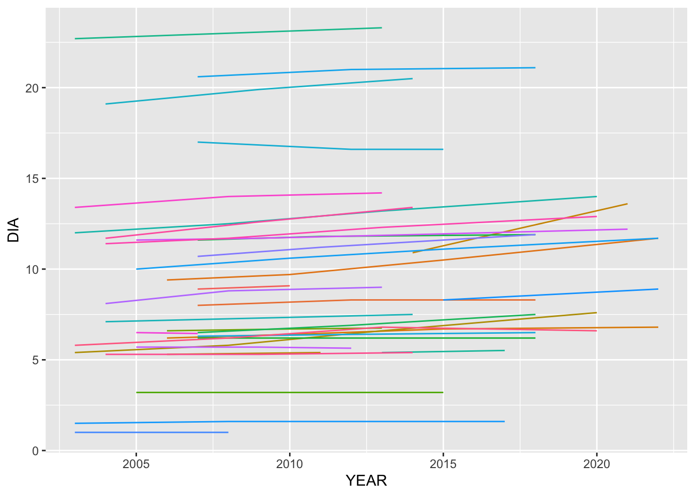
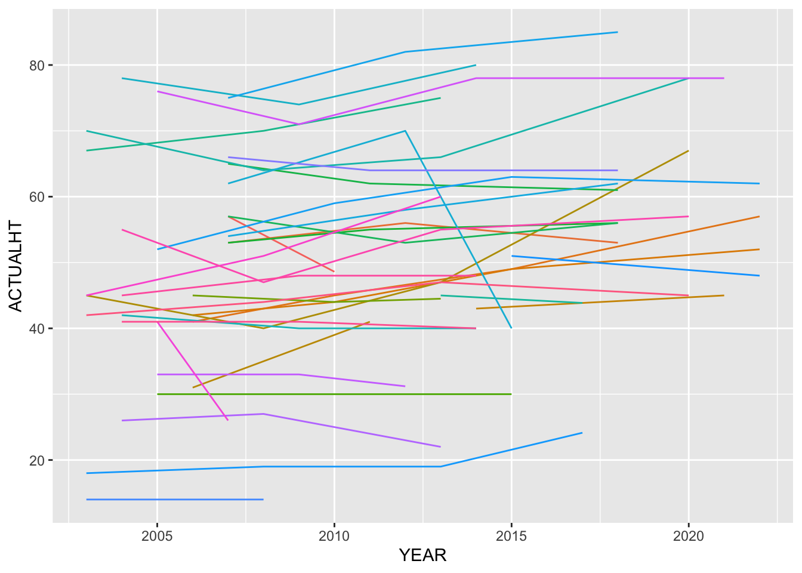

library(readr)
library(dplyr)
library(tidyr)
library(here)Calculating Annualized Carbon Estimates
I’m going to try to work through a small sample of data to figure out how the code in forestTIME-builder works
Read in data
I’ll use RI as an example. Some of the columns get auto-detected as the wrong type (e.g. CN should be character, not numeric, even though it looks like a number). I got these column types from the Green Book and recorded them in a list in scripts/create_column_types.R.
tree_raw <- read_csv(
here("data/rawdat/state/RI_TREE.csv"),
col_types = cols(
CN = col_character(),
PLT_CN = col_character(),
PREV_TRE_CN = col_character(),
DAMTYP1 = col_integer(),
DAMSEV1 = col_integer(),
DAMTYP2 = col_integer(),
DAMSEV2 = col_integer(),
ACTUALHT = col_double(),
HT = col_double(),
DIA = col_double(),
MORTYR = col_double(),
INVYR = col_double()
)
)
plot_raw <- read_csv(
here("data/rawdat/state/RI_PLOT.csv"),
col_types = cols(
CN = col_character()
)
)
plotgeom_raw <- read_csv(
here("data/rawdat/state/RI_PLOTGEOM.csv"),
col_types = cols(
CN = col_character()
)
)
#needed later
cond_raw <- read_csv(
here("data/rawdat/state/RI_COND.csv"),
col_types = cols(
CN = col_character(),
PLT_CN = col_character(),
NBR_LIVE_STEMS = col_integer(),
LAND_COVER_CLASS_CD_RET = col_integer(),
TRTYR2 = col_integer(),
DSTRBYR2 = col_integer()
)
)Initial Wrangling
Tree table
Tree table gets filtered to only year 2000 and onward, the CN column is renamed to be more specific, and composite IDs are created that should be universally unique (not just unique within the plot or state)
tree <- tree_raw |>
filter(INVYR >= 2000.0) |>
rename(TREE_CN = CN) |>
mutate(
PLOT_COMPOSITE_ID = paste(STATECD, UNITCD, COUNTYCD, PLOT, sep = "_"),
TREE_COMPOSITE_ID = paste(STATECD, UNITCD, COUNTYCD, PLOT, SUBP, TREE, sep = "_"),
.before = 1
)It is my understanding that the TREE_COMPOSITE_ID is now consistent through time as well since the combination of state, unit, county, plot, sub-plot, and tree number are unique for each tree and the same every inventory. But if that’s try, what does the chain_by_joins() function do??
Chain by joins
Question
It looks like chain_by_joins() adds a TREE_FIRST_CN column that connects every observation to the first CN a tree was given. Is this column needed? Or is TREE_COMPOSITE_ID enough?
Plot table
I need to join one column from the PLOTGEOM table (ECOSUBCD) that is needed for the carbon estimation code (it used to be in the PLOT table in older versions of FIADB)
We also do similar filtering and renaming as in the tree table
#only care about keys and the ECOSUBCD column
plotgeom <- plotgeom_raw |> select(CN, INVYR, ECOSUBCD)
plot <- left_join(plot_raw,
plotgeom,
by = join_by(CN, INVYR)) |>
filter(INVYR >= 2000.0) |>
rename(PLT_CN = CN) |>
mutate(
PLOT_COMPOSITE_ID = paste(STATECD, UNITCD, COUNTYCD, PLOT, sep = "_"),
.before = 1
)Cond table
Needed later on for carbon estimation
cond <-
cond_raw |>
filter(INVYR >= 2000.0) |>
rename(COND_CN = CN) |>
mutate(
PLOT_COMPOSITE_ID = paste(STATECD, UNITCD, COUNTYCD, PLOT, sep = "_"),
.before = 1
)Annualizing
I’m skipping some steps in create_all_tables.R, but I don’t think they’re all necessary. This section would replace what goes on in add_tree_annualized_to_db.R, which I think is probably overly complicated and has the issue of not working when a tree goes “missing” for a survey.
First, ACTUALHT and HT get coalesced. If I remember correctly, ACTUALHT only applies when a tree is broken, and we want to use that value for carbon estimation if it exists.
tree <-
tree |>
mutate(ACTUALHT = coalesce(ACTUALHT, HT)) |>
select(ACTUALHT, HT, everything())Maybe I’m not understanding something that the code needs to do, but I think we can just use the built-in R function for linear interpolation, approx().
Let’s try an example
Toy Example
df <- tibble::tribble(
~TREE_COMPOSITE_ID, ~YEAR, ~HT, ~STATUSCD,
1, 2000, 20, 1,
1, 2005, 30, 1,
1, 2010, 37, 1,
1, 2015, 45, 2,
2, 2000, 5, 1,
2, 2005, NA, NA,
2, 2010, NA, NA,
2, 2015, 20, 1,
2, 2020, 32, 1,
3, 2000, NA, 2
)There are two trees each measured every 5 years. Tree 1 was measured in 4 surveys, the last of which it was dead. Tree 2 was missing for two surveys, and then found again still alive. Tree 3 was only recorded once and it was already dead in the first survey.
First we need to expand it to include all years between surveys.
all_yrs <-
df |>
group_by(TREE_COMPOSITE_ID) |>
expand(YEAR = full_seq(YEAR, 1))
df_all_yrs <- right_join(df, all_yrs) |> arrange(TREE_COMPOSITE_ID, YEAR)Joining with `by = join_by(TREE_COMPOSITE_ID, YEAR)`df_all_yrs# A tibble: 38 × 4
TREE_COMPOSITE_ID YEAR HT STATUSCD
<dbl> <dbl> <dbl> <dbl>
1 1 2000 20 1
2 1 2001 NA NA
3 1 2002 NA NA
4 1 2003 NA NA
5 1 2004 NA NA
6 1 2005 30 1
7 1 2006 NA NA
8 1 2007 NA NA
9 1 2008 NA NA
10 1 2009 NA NA
# ℹ 28 more rowsThen, I think we just need to use approx() in a mutate() call, but let’s make a “friendlier” version that returns a vector and does nothing when it can’t interpolate (i.e. it needs at least 2 non-NA values to interpolate).
interpolate <- function(x, y) {
if (sum(!is.na(y)) < 2){
return(y)
} else {
approx(x, y, xout = x)$y
}
}df_interpolated <- df_all_yrs |>
group_by(TREE_COMPOSITE_ID) |>
mutate(HT_interpolated = interpolate(x = YEAR, y = HT))
df_interpolated# A tibble: 38 × 5
# Groups: TREE_COMPOSITE_ID [3]
TREE_COMPOSITE_ID YEAR HT STATUSCD HT_interpolated
<dbl> <dbl> <dbl> <dbl> <dbl>
1 1 2000 20 1 20
2 1 2001 NA NA 22
3 1 2002 NA NA 24
4 1 2003 NA NA 26
5 1 2004 NA NA 28
6 1 2005 30 1 30
7 1 2006 NA NA 31.4
8 1 2007 NA NA 32.8
9 1 2008 NA NA 34.2
10 1 2009 NA NA 35.6
# ℹ 28 more rowsYeah, that seems to have done it! Then we can just cut off any dead trees at the estimated mortality year.
df_interpolated <-
df_interpolated |>
group_by(TREE_COMPOSITE_ID) |> #for each tree...
#figure out when it was last recorded alive and first recorded dead
mutate(
last_live = YEAR[max(which(STATUSCD == 1))],
first_dead = YEAR[min(which(STATUSCD == 2))]
) |>
#estimate the mortality year as the midpoint between surveys
mutate(
dead_yr = ceiling(mean(c(last_live, first_dead))),
last_yr = if_else(!is.na(dead_yr), dead_yr, max(YEAR))
) |>
#remove estimates after death
filter(YEAR <= last_yr) |>
select(-last_live, -first_dead, -dead_yr, -last_yr)Warning: There were 2 warnings in `mutate()`.
The first warning was:
ℹ In argument: `last_live = YEAR[max(which(STATUSCD == 1))]`.
ℹ In group 3: `TREE_COMPOSITE_ID = 3`.
Caused by warning in `max()`:
! no non-missing arguments to max; returning -Inf
ℹ Run `dplyr::last_dplyr_warnings()` to see the 1 remaining warning.library(ggplot2)
ggplot(df_interpolated, aes(x = YEAR)) +
geom_point(aes(y = HT)) +
geom_line(aes(y = HT_interpolated)) +
facet_wrap(vars(TREE_COMPOSITE_ID))Warning: Removed 30 rows containing missing values or values outside the scale range
(`geom_point()`).Warning: Removed 1 row containing missing values or values outside the scale range
(`geom_line()`).
Actual data
It might be trickier to do with the real data? There are some trees in the tree table that were dead on their first survey and don’t have any height or diameter measurements. We should get rid of these.
tree <- tree |>
group_by(TREE_COMPOSITE_ID) |>
filter(!(all(is.na(DIA)) |
all(is.na(ACTUALHT)) |
all(is.na(HT)) |
all(STATUSCD != 1)))I think only ACTUALHT and DIA need interpolation? We should be able to get rid of most everything in the tree table when creating annualized measures. If users need the per-tree data, they can join back with the tree table by TREE_COMPOSITE_ID.
First, expand to include all years
all_yrs <- tree |>
group_by(TREE_COMPOSITE_ID) |>
expand(YEAR = full_seq(INVYR, 1))
tree_annual <-
right_join(
tree |> select(TREE_COMPOSITE_ID, INVYR, ACTUALHT, HT, DIA, STATUSCD, MORTYR),
all_yrs,
by = join_by(TREE_COMPOSITE_ID, INVYR == YEAR)
) |>
arrange(TREE_COMPOSITE_ID, INVYR) |>
rename(YEAR = INVYR)
tree_annual# A tibble: 49,578 × 7
# Groups: TREE_COMPOSITE_ID [4,798]
TREE_COMPOSITE_ID YEAR ACTUALHT HT DIA STATUSCD MORTYR
<chr> <dbl> <dbl> <dbl> <dbl> <dbl> <dbl>
1 44_1_1_228_1_1 2004 30 30 5.9 1 NA
2 44_1_1_228_1_1 2005 NA NA NA NA NA
3 44_1_1_228_1_1 2006 NA NA NA NA NA
4 44_1_1_228_1_1 2007 NA NA NA NA NA
5 44_1_1_228_1_1 2008 35 35 6.4 1 NA
6 44_1_1_228_1_1 2009 NA NA NA NA NA
7 44_1_1_228_1_1 2010 NA NA NA NA NA
8 44_1_1_228_1_1 2011 NA NA NA NA NA
9 44_1_1_228_1_1 2012 NA NA NA NA NA
10 44_1_1_228_1_1 2013 35 35 6.8 1 NA
# ℹ 49,568 more rowsThen interpolate with our custom approx() wrapper function, interpolate()
tree_interpolated <-
tree_annual |>
group_by(TREE_COMPOSITE_ID) |>
mutate(
ACTUALHT = interpolate(x = YEAR, y = ACTUALHT),
DIA = interpolate(x = YEAR, y = DIA),
HT = interpolate(x = YEAR, y = HT)
)
tree_interpolated# A tibble: 49,578 × 7
# Groups: TREE_COMPOSITE_ID [4,798]
TREE_COMPOSITE_ID YEAR ACTUALHT HT DIA STATUSCD MORTYR
<chr> <dbl> <dbl> <dbl> <dbl> <dbl> <dbl>
1 44_1_1_228_1_1 2004 30 30 5.9 1 NA
2 44_1_1_228_1_1 2005 31.2 31.2 6.02 NA NA
3 44_1_1_228_1_1 2006 32.5 32.5 6.15 NA NA
4 44_1_1_228_1_1 2007 33.8 33.8 6.28 NA NA
5 44_1_1_228_1_1 2008 35 35 6.4 1 NA
6 44_1_1_228_1_1 2009 35 35 6.48 NA NA
7 44_1_1_228_1_1 2010 35 35 6.56 NA NA
8 44_1_1_228_1_1 2011 35 35 6.64 NA NA
9 44_1_1_228_1_1 2012 35 35 6.72 NA NA
10 44_1_1_228_1_1 2013 35 35 6.8 1 NA
# ℹ 49,568 more rowsThen we need to determine the year trees died.
#NOTE: some of these `if_else()` could be replaced with `coalesce()`, but `if_else()` might be more explicit and readable
tree_annualized <-
tree_interpolated |>
group_by(TREE_COMPOSITE_ID) |> #for each tree...
#figure out when it was last recorded alive and first recorded dead
mutate(
last_live = YEAR[max(which(STATUSCD == 1))],
first_dead = YEAR[min(which(STATUSCD == 2))]
) |>
#estimate the mortality year as the midpoint between surveys
mutate(
dead_yr = ceiling(mean(c(last_live, first_dead))),
#if dead_yr is NA still (because it was never alive and mean(c(NA, first_dead)) is NA), then just use the first_dead year
dead_yr = if_else(is.na(dead_yr), first_dead, dead_yr),
last_yr = if_else(!is.na(dead_yr), dead_yr, max(YEAR))
) |>
#use MORTYR data if it exists
mutate(
last_yr = if_else(!is.na(MORTYR), MORTYR, last_yr)
) |>
#remove any rows after estimated death year
filter(YEAR <= last_yr) |>
#clean up temporary columns
select(-last_live, -first_dead, -dead_yr, -last_yr) |>
#I think we also don't need MORTYR and STATUSCD. If users want those, they could join to the tree table, but they don't make sense in this annualized table
select(-MORTYR, -STATUSCD)Warning: There were 4113 warnings in `mutate()`.
The first warning was:
ℹ In argument: `first_dead = YEAR[min(which(STATUSCD == 2))]`.
ℹ In group 1: `TREE_COMPOSITE_ID = "44_1_1_228_1_1"`.
Caused by warning in `min()`:
! no non-missing arguments to min; returning Inf
ℹ Run `dplyr::last_dplyr_warnings()` to see the 4112 remaining warnings.There are some trees where interpolation fails. For example:
- 44_1_1_228_4_7 was only measured once before being recorded as dead. Nothing we can do here!
- 44_1_1_91_3_4 was alive for two surveys and then recorded as dead with no height or diameter in a third survey. So, we estimate a mortality year, but can’t interpolate.
failed_to_interpolate <-
tree_annualized |>
filter(any(is.na(DIA))) |>
pull(TREE_COMPOSITE_ID) |>
unique()
tree |>
group_by(TREE_COMPOSITE_ID) |>
filter(!all(STATUSCD != 1)) |>
filter(TREE_COMPOSITE_ID %in% failed_to_interpolate) |>
arrange(TREE_COMPOSITE_ID, INVYR) |>
select(TREE_COMPOSITE_ID, INVYR, STATUSCD, DIA, ACTUALHT, everything())# A tibble: 4,118 × 198
# Groups: TREE_COMPOSITE_ID [1,528]
TREE_COMPOSITE_ID INVYR STATUSCD DIA ACTUALHT HT PLOT_COMPOSITE_ID
<chr> <dbl> <dbl> <dbl> <dbl> <dbl> <chr>
1 44_1_1_228_4_7 2004 1 3.2 30 30 44_1_1_228
2 44_1_1_228_4_7 2008 2 NA NA NA 44_1_1_228
3 44_1_1_277_2_1 2007 1 2 17 17 44_1_1_277
4 44_1_1_277_2_1 2012 2 NA NA NA 44_1_1_277
5 44_1_1_91_2_13 2007 1 9.9 51 51 44_1_1_91
6 44_1_1_91_2_13 2012 2 NA NA NA 44_1_1_91
7 44_1_1_91_3_4 2007 1 2.4 25 25 44_1_1_91
8 44_1_1_91_3_4 2012 1 2.4 25 25 44_1_1_91
9 44_1_1_91_3_4 2018 2 NA NA NA 44_1_1_91
10 44_1_1_91_3_5 2007 1 2.8 28 28 44_1_1_91
# ℹ 4,108 more rows
# ℹ 191 more variables: TREE_CN <chr>, PLT_CN <chr>, PREV_TRE_CN <chr>,
# STATECD <dbl>, UNITCD <dbl>, COUNTYCD <dbl>, PLOT <dbl>, SUBP <dbl>,
# TREE <dbl>, CONDID <dbl>, PREVCOND <dbl>, SPCD <dbl>, SPGRPCD <dbl>,
# DIAHTCD <dbl>, HTCD <dbl>, TREECLCD <dbl>, CR <dbl>, CCLCD <dbl>,
# TREEGRCD <dbl>, AGENTCD <dbl>, CULL <dbl>, DAMLOC1 <dbl>, DAMTYP1 <int>,
# DAMSEV1 <int>, DAMLOC2 <dbl>, DAMTYP2 <int>, DAMSEV2 <int>, …tree_annualized# A tibble: 46,751 × 5
# Groups: TREE_COMPOSITE_ID [4,798]
TREE_COMPOSITE_ID YEAR ACTUALHT HT DIA
<chr> <dbl> <dbl> <dbl> <dbl>
1 44_1_1_228_1_1 2004 30 30 5.9
2 44_1_1_228_1_1 2005 31.2 31.2 6.02
3 44_1_1_228_1_1 2006 32.5 32.5 6.15
4 44_1_1_228_1_1 2007 33.8 33.8 6.28
5 44_1_1_228_1_1 2008 35 35 6.4
6 44_1_1_228_1_1 2009 35 35 6.48
7 44_1_1_228_1_1 2010 35 35 6.56
8 44_1_1_228_1_1 2011 35 35 6.64
9 44_1_1_228_1_1 2012 35 35 6.72
10 44_1_1_228_1_1 2013 35 35 6.8
# ℹ 46,741 more rowsVisualize results
Let’s take a sample of trees and visualize them.
set.seed(123)
tree_sample <- tree |> pull(TREE_COMPOSITE_ID) |> unique() |> sample(50)
tree_annualized |> filter(TREE_COMPOSITE_ID %in% tree_sample) |>
ggplot(aes(x = YEAR, y = DIA, color = TREE_COMPOSITE_ID)) +
geom_line(show.legend = FALSE)Warning: Removed 89 rows containing missing values or values outside the scale range
(`geom_line()`).
tree_annualized |> filter(TREE_COMPOSITE_ID %in% tree_sample) |>
ggplot(aes(x = YEAR, y = HT, color = TREE_COMPOSITE_ID)) +
geom_line(show.legend = FALSE)Warning: Removed 89 rows containing missing values or values outside the scale range
(`geom_line()`).
tree_annualized |> filter(TREE_COMPOSITE_ID %in% tree_sample) |>
ggplot(aes(x = YEAR, y = ACTUALHT, color = TREE_COMPOSITE_ID)) +
geom_line(show.legend = FALSE)Warning: Removed 89 rows containing missing values or values outside the scale range
(`geom_line()`).
Cool! But this makes me wonder if we should really interpolate ACTUALHT linearly. Trees don’t break a little bit at a time!
Carbon estimation
Here’s where we use the functions in carbon_code/ to estimate carbon and AGB. I think this will involve a lot of joining—first to the tree table to get the species code, then to some reference tables to get info about each species (e.g. hardwood vs. softwood), then to some other variables?? Then all this gets plugged into some functions??
I’ll be trying to replicate the code in R/add_nsvb_inputs_to_db.R and then R/add_carbon_variables_mortyr.R
NSVB vars table
Each PLOT_COMPOSITE_ID corresponds to multiple PLOT_CN—each year has a different PLT_CN. Maybe the plot-level variables change from year to year, so we need to join by PLT_CN?
nsvb_vars <- tree |>
select(
TREE_COMPOSITE_ID,
PLOT_COMPOSITE_ID,
PLT_CN,
STATUSCD,
##Don't we want to use the interpolated version in tree_annualized?
# DIA,
# HT,
# ACTUALHT,
###
CONDID,
SPCD,
TREECLCD,
CULL,
VOLCFGRS,
## Don't we want to estimate this from the interpolated values?
# DRYBIO_AG,
# CARBON_AG,
###
STANDING_DEAD_CD,
DECAYCD,
CR
)
Question
Why does the code fill in NAs in the CULL column with 0s?
nsvb_vars <- nsvb_vars |>
mutate(CULL = ifelse(is.na(CULL), 0, CULL))Then we join to the plot table to get the ECOSUBCD column
#just confirming that each PLOT_CN only has one ECOSUBCD
# plot |>
# group_by(PLT_CN) |> summarize(n = length(unique(ECOSUBCD))) |> filter(n!=1)
plot_ecosubcds <- plot |>
group_by(PLT_CN) |>
summarize(ECOSUBCD = first(ECOSUBCD))
nsvb_vars <- left_join(nsvb_vars, plot_ecosubcds, by = join_by(PLT_CN))Then we need the following columns from the cond table: CONDID, STDORGCD, COND_STATUS_CD.
nsvb_vars <- left_join(nsvb_vars,
cond |> select(PLT_CN, CONDID, STDORGCD, COND_STATUS_CD),
by = join_by(PLT_CN, CONDID))Now we join in some columns from reference tables.
ref_species <- read_csv(here("data/rawdat/REF_SPECIES.csv"))Rows: 2697 Columns: 41
── Column specification ────────────────────────────────────────────────────────
Delimiter: ","
chr (11): COMMON_NAME, SHARED_COMMON_NAME_IND, GENUS, SPECIES, VARIETY, SUB...
dbl (28): SPCD, E_SPGRPCD, W_SPGRPCD, C_SPGRPCD, P_SPGRPCD, MAJOR_SPGRPCD, ...
dttm (2): CREATED_DATE, MODIFIED_DATE
ℹ Use `spec()` to retrieve the full column specification for this data.
ℹ Specify the column types or set `show_col_types = FALSE` to quiet this message.ref_tree_carbon_ratio_dead <-
read_csv(here("data/rawdat/REF_TREE_CARBON_RATIO_DEAD.csv"))Rows: 10 Columns: 4
── Column specification ────────────────────────────────────────────────────────
Delimiter: ","
chr (1): SFTWD_HRDWD
dbl (3): CN, DECAYCD, CARBON_RATIO
ℹ Use `spec()` to retrieve the full column specification for this data.
ℹ Specify the column types or set `show_col_types = FALSE` to quiet this message.ref_tree_decay_prop <- read_csv(here("data/rawdat/REF_TREE_DECAY_PROP.csv"))Rows: 10 Columns: 6
── Column specification ────────────────────────────────────────────────────────
Delimiter: ","
chr (1): SFTWD_HRDWD
dbl (5): CN, DECAYCD, DENSITY_PROP, BARK_LOSS_PROP, BRANCH_LOSS_PROP
ℹ Use `spec()` to retrieve the full column specification for this data.
ℹ Specify the column types or set `show_col_types = FALSE` to quiet this message.
Question
Why is WOOD_SPGR_GREENVOL_DRWT renamed to WDSG here? Is that one of the inputs to the carbon estimation functions?
nsvb_vars <- nsvb_vars |>
left_join(
ref_species |>
select(
SPCD,
JENKINS_SPGRPCD,
SFTWD_HRDWD,
WOOD_SPGR_GREENVOL_DRYWT,
CARBON_RATIO_LIVE
) |>
rename(WDSG = WOOD_SPGR_GREENVOL_DRYWT),
by = join_by(SPCD)
)
Question
I’m not sure what’s going on here, but it looks like the code creates a new column called CULL_DECAY_RATIO using the DENSITY_PROP column for DECAYCD 3. Then later it looks like this is overwritten if the tree is NOT alive (STATUSCD!=1) to be 1. There are no notes in the code indicating why this is done using DECAYCD 3:
Only limb stubs exist; the top is broken; a variable amount of bark remains; sapwood is sloughing; heartwood has advanced decay in upper bole and is beginning at the base.
nsvb_vars |> ungroup() |> count(DECAYCD)# A tibble: 6 × 2
DECAYCD n
<dbl> <int>
1 1 122
2 2 141
3 3 170
4 4 53
5 5 5
6 NA 12476nsvb_vars <-
nsvb_vars |>
ungroup() |>
#first joins by SFTWD_HRDWD only the DENSITY_PROP column for DECAYCD 3, but calls it CULL_DECAY_RATIO
left_join(
ref_tree_decay_prop |>
filter(DECAYCD == 3) |>
select(
SFTWD_HRDWD,
CULL_DECAY_RATIO = DENSITY_PROP
),
by = join_by(SFTWD_HRDWD)
) |>
#then joins additional columns (including DENSITY_PROP) based on DECAYCD and SFTWD_HRDWD
left_join(
ref_tree_decay_prop |>
select(SFTWD_HRDWD,
DECAYCD,
DENSITY_PROP,
BARK_LOSS_PROP,
BRANCH_LOSS_PROP),
by = join_by(DECAYCD, SFTWD_HRDWD)
) |>
#then join to the carbon ratio table to get CARBON_RATIO
left_join(
ref_tree_carbon_ratio_dead |>
select(SFTWD_HRDWD, DECAYCD, CARBON_RATIO),
by = join_by(DECAYCD, SFTWD_HRDWD)
)